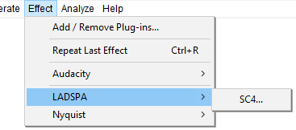
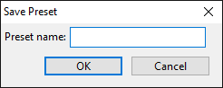
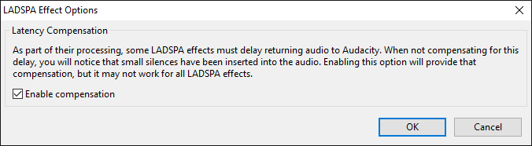

Effect Menu: LADSPA
- Most LADSPA plug-ins are effects, but they are also used to provide some of Audacity's built-in audio generators and can be used for audio analysis.
- Additional LADSPA plug-ins can be downloaded for Windows, Mac and Linux. Please see the LADSPA section of the Download page on the Audacity Website for more details and links.
- LADSPA effects support real-time preview. They do not support import/export of presets but do support saving presets for use in Audacity only. A few LADSPA plug-ins have an "Effect Output" section which is populated after the effect is applied.
- Loading of LADSPA effects is controlled by the Plug-in Manager: Effects, Generators and Analyzers dialog.
- Click, or hover, on any menu item in the image to read about that command. Skip the image
- 
LADSPA plug-ins shipped with Audacity
One sample LADSPA effect is included with Windows and Mac builds of Audacity:
SC4...
A stereo compressor with a variable envelope follower for RMS / peak behavior.
Adding a LADSPA plug-in
For detailed instructions on installing LADSPA plug-ins for Audacity see: Windows, Mac or Linux
Saving LADPSA effect settings as a User Preset
To save the current effect settings as a User Preset, in the effect's dialog, click the button then choose Save Preset...  which brings up the following dialog:
which brings up the following dialog:
- 
Type a name for the preset then click after which the saved preset will appear in the "User Presets" list in the Manage menu.
LADSPA Effect Options
In the effect's dialog, click the button then choose Options...  to bring up the dialog illustrated below. When you change the options in this dialog, the changes apply only to the current effect that's open. All other LADSPA effects will remain at the default options shown below until you change their options.
to bring up the dialog illustrated below. When you change the options in this dialog, the changes apply only to the current effect that's open. All other LADSPA effects will remain at the default options shown below until you change their options.
- 
- Latency Compensation: This setting (enabled by default) compensates for waveform delay caused by LADSPA effects which preload audio data to a buffer. Compensation may not work in all cases, and for it to work, any compensation or latency reporting settings in the effect itself must be enabled. If compensation fails or if this Audacity setting is unchecked, effects that buffer audio will insert silence at the start of the processed selection and remove a corresponding amount of audio from the end of the selection. Enabling or disabling compensation is effective immediately.